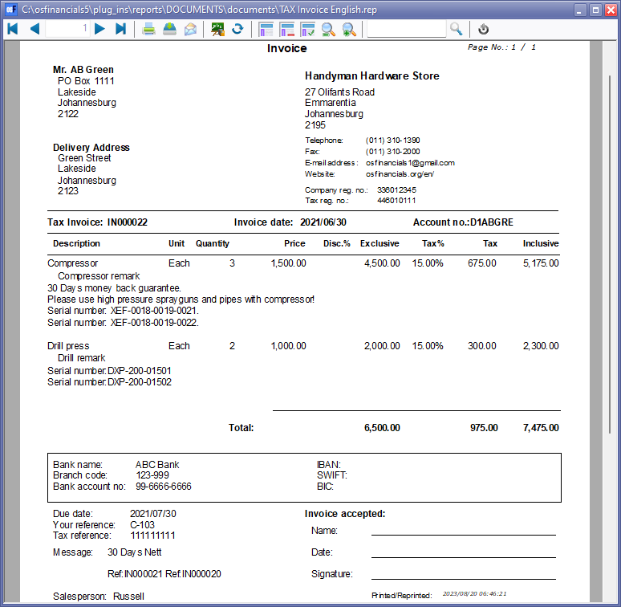
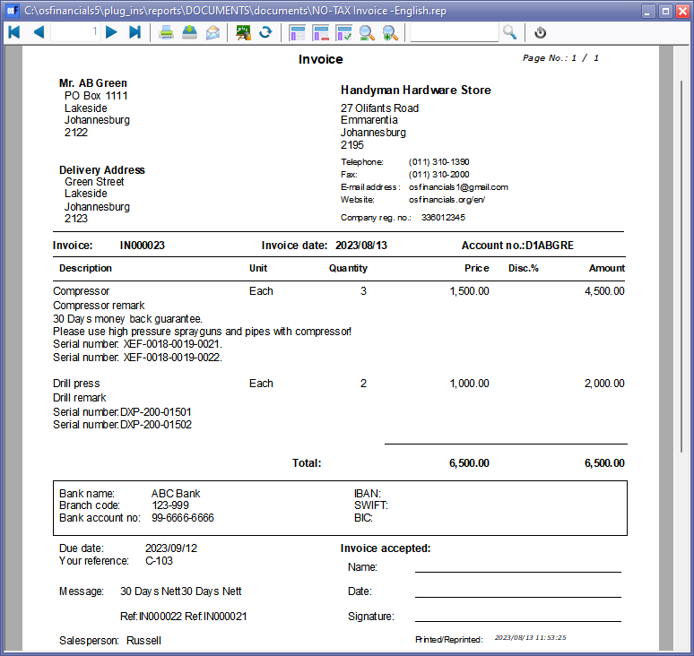

Document layout files (English) - (static text)
English Layout Files With Static Text - English
The "TAX Invoice - English" and "NO-TAX Invoice - English" Invoice document layout files is designed as a straightforward layout file featuring fixed text labels in the English language. Unlike translatable expressions enabled by language files and settings in osFinancials, this layout utilizes static text labels. The document pulls data from various fields entered during the document processing phase, and it establishes connections to tables and expressions within the Database fields to present the data accurately.
- "TAX Invoice - English" - This document layout file includes the Tax (VAT/GST/Sales tax) expressions and static tax-related labels. This layout file is designed for those businesses which needs to be registered for Tax (VAT/GST/Sales tax).
- "NO-TAX Invoice - English" - This document layout file excludes the Tax (VAT/GST/Sales tax) expressions and static tax-related labels. This layout file is designed for those businesses which is not required to be registered for Tax (VAT/GST/Sales tax).
These layout files offer a simple design featuring fixed text labels in the English language. Unlike translatable expressions, these layouts utilize static text labels. They are well-suited for customization to suit a range of document types, including "Invoice", "Credit note", "Quote", "Purchase", "Supplier return", or "Order". You have the flexibility to personalize these files according to your specific layout requirements and English translations. Additionally, you can leverage the Invoice layout as a foundation for creating other document types.
Example: TAX Invoice - English
The "TAX Invoice - English" document layout files is designed as a straightforward layout file featuring fixed text labels in the English language. Unlike translatable expressions enabled by language files and settings in osFinancials, this layout utilizes static text labels. The document pulls data from various fields entered during the document processing phase, and it establishes connections to tables and expressions within the Database fields to present the data accurately.
TAX Invoice - English - VAT/GST/Sales Tax expressions For scenarios where VAT/GST/Sales Tax is not relevant to your business, you can refer to a similar layout file called "NO-TAX Invoice - English". This layout excludes the VAT/GST/Sales Tax provisions, if needed. This layout file accommodates those businesses that does not meet the compulsory threshold for registration of Tax (VAT/GST/ Sales Tax) or those businesses which did not opt for the voluntarily registration of Tax (VAT/GST/ Sales Tax).

This layout file includes the details of your business bank accounts (for bank account 1) as entered in Setup → Company info menu on the Setup ribbon. You may print the "Company info – Bank accounts" report from the Reports → Company info menu on the Reports ribbon to verify that your banking details are correct. This ensures that accurate and up-to-date banking information is presented on your documents, fostering transparency and professionalism in your financial transactions.
Customising the TAX Invoice - English layout file
The "TAX Invoice - English" layout file is designed as a straightforward template, featuring fixed text labels in the English language. Unlike translatable expressions enabled by language files and settings in osFinancials, this layout utilizes static text labels. The document draws data from various fields entered during the document processing phase and establishes connections to tables and expressions within the database fields to ensure accurate presentation of the data.
You have the creative freedom to customize the "TAX Invoice - English" according to your preferences. Adjust not only the placement of static text and labels but also integrate logos and image objects to craft a unique design that resonates with your brand identity and document needs.
Furthermore, The "TAX Invoice - English" layout file includes English tax components to accommodate VAT/GST/Sales Tax requirements.
Utilizing the "TAX Invoice - English" Layout:
- Customization Basis: This layout provides a strong foundation for customization. The "TAX Invoice - English" layout file includes English tax components to accommodate VAT/GST/Sales Tax requirements. You can duplicate the "TAX Invoice - English" layout and utilize it as a template for creating personalized document layout files for invoices. You may also create other document types such as credit notes, quotes, purchases supplier returns and orders.
- Edit Labels: Modify, edit, or translate the static text labels within the layout to align with your specific language and terminology preferences.
- Design Flexibility: Adjust the placement of static text, labels, and even database fields (expressions) to create a layout that suits other document types as well. This flexibility extends to sales documents such as invoices, credit notes, and quotes, as well as purchase documents like purchases, supplier returns, and orders.
- Including Logos and Image Objects:
- Logos: Infuse your company's logo for a distinctive and professional touch. Logos contribute to branding and reinforce your business identity across documents.
- Image Objects: Elevate your design by incorporating image objects. These can include product images, service visuals, or any other relevant graphics that enhance the visual appeal of your documents.
- Tailoring Layouts for Your Needs: With the ability to seamlessly integrate logos, image objects, and finely tune the placement of text and labels, you can create layout files that reflect your business's style and meet specific requirements. Whether you're designing invoices, credit notes, quotes, purchases, supplier returns, or orders, this adaptability empowers you to produce documents that stand out and convey information effectively.
By harnessing design flexibility, you ensure that your documents not only convey information accurately but also exude a professional and consistent visual representation, strengthening your brand's identity and leaving a lasting impression.
- Tax Relevance and Customization Options:
- For Tax-Applicable Scenarios: The "TAX Invoice - English" layout is designed to include English Tax to accommodate VAT/GST/Sales Tax. This ensures accurate tax calculations and inclusion in your invoice documents.
- For Non-Tax Scenarios: If your business operates in scenarios where VAT/GST/Sales Tax is not applicable, you have the option to refer to a similar layout file called "NO-TAX Invoice -English." This layout is designed to accommodate scenarios where tax provisions are excluded. It provides the flexibility to tailor your document layout based on your business needs.
By understanding and utilizing the features and customization options of the "Tutorial-Invoice - English" layout file, you can create professional, accurate, and tailored invoice documents that suit your business's specific requirements and scenarios.
By harnessing design flexibility, you ensure that your documents not only convey information accurately but also exude a professional and consistent visual representation, strengthening your brand's identity and leaving a lasting impression.
NO-TAX Invoice - English
The "NO-TAX Invoice - English" document layout files is designed as a straightforward layout file featuring fixed text labels in the English language. Unlike translatable expressions enabled by language files and settings in osFinancials, this layout utilizes static text labels. The document pulls data from various fields entered during the document processing phase, and it establishes connections to tables and expressions within the Database fields to present the data accurately.
TAX Invoice - English - VAT/GST/Sales Tax expressions For scenarios where VAT/GST/Sales Tax becomes relevant to your business, you can refer to a similar layout file called "TAX Invoice - English". This layout accommodates the inclusion of VAT/GST/Sales Tax provisions, if needed, offering flexibility as your business needs evolve.

Here's what you can do with this "NO-TAX Invoice - English" layout:
- Customization Basis: You can create a duplicate of this NO-TAX Invoice layout and use it as a foundational template to personalize your document layout files for invoices.
- Edit Labels: Modify, edit, or translate the static text labels within the document layout to align with your specific language and terminology requirements.
- Design Flexibility: Adjust the placement of static text, labels, and even database fields (expressions) to create a layout that suits other document types as well. This extends to sales documents such as invoices, credit notes, and quotes, as well as purchase documents like purchases, supplier returns, and orders.
For scenarios where VAT/GST/Sales Tax becomes relevant to your business, you can refer to a similar layout file called "TAX Invoice - English". This layout accommodates the inclusion of VAT/GST/Sales Tax provisions, if needed, offering flexibility as your business needs evolve.
Customising the NO-TAX Invoice - English layout file
The "NO-TAX Invoice - English" layout file is designed as a straightforward template, featuring fixed text labels in the English language. Unlike translatable expressions enabled by language files and settings in osFinancials, this layout utilizes static text labels. The document draws data from various fields entered during the document processing phase and establishes connections to tables and expressions within the database fields to ensure accurate presentation of the data.
You have the creative freedom to customize the "NO-TAX Invoice - English" according to your preferences. Adjust not only the placement of static text and labels but also integrate logos and image objects to craft a unique design that resonates with your brand identity and document needs.
The "NO-TAX Invoice - English" layout file includes English tax components to accommodate VAT/GST/Sales Tax requirements.
Utilizing the "NO-TAX Invoice - English" Layout:
- Customization Basis: This layout provides a strong foundation for customization. The "NO-TAX Invoice - English" layout file excludes English tax components to accommodate VAT/GST/Sales Tax requirements. You can duplicate the "NO-TAX Invoice - English" layout and utilize it as a template for creating personalized document layout files for invoices. You may also create other document types such as credit notes, quotes, purchases supplier returns and orders.
- Edit Labels: Modify, edit, or translate the static text labels within the layout to align with your specific language and terminology preferences.
- Design Flexibility: Adjust the placement of static text, labels, and even database fields (expressions) to create a layout that suits other document types as well. This flexibility extends to sales documents such as invoices, credit notes, and quotes, as well as purchase documents like purchases, supplier returns, and orders.
- Including Logos and Image Objects:
- Logos: Infuse your company's logo for a distinctive and professional touch. Logos contribute to branding and reinforce your business identity across documents.
- Image Objects: Elevate your design by incorporating image objects. These can include product images, service visuals, or any other relevant graphics that enhance the visual appeal of your documents.
- Tailoring Layouts for Your Needs: With the ability to seamlessly integrate logos, image objects, and finely tune the placement of text and labels, you can create layout files that reflect your business's style and meet specific requirements. Whether you're designing invoices, credit notes, quotes, purchases, supplier returns, or orders, this adaptability empowers you to produce documents that stand out and convey information effectively.
By harnessing design flexibility, you ensure that your documents not only convey information accurately but also exude a professional and consistent visual representation, strengthening your brand's identity and leaving a lasting impression.
- Tax Relevance and Customization Options:
- For Tax-Applicable Scenarios: The "TAX Invoice - English" layout is designed to include English Tax to accommodate VAT/GST/Sales Tax. This ensures accurate tax calculations and inclusion in your invoice documents.
- For Non-Tax Scenarios: If your business operates in scenarios where VAT/GST/Sales Tax is not applicable, you have the option to refer to a similar layout file called "NO-TAX Invoice -English." This layout is designed to accommodate scenarios where tax provisions are excluded. It provides the flexibility to tailor your document layout based on your business needs.
By understanding and utilizing the features and customization options of the "Tax-Invoice - English" layout file, you can create professional, accurate, and tailored invoice documents that suit your business's specific requirements and scenarios.
By harnessing design flexibility, you ensure that your documents not only convey information accurately but also exude a professional and consistent visual representation, strengthening your brand's identity and leaving a lasting impression.
Additional Note for Customization of Static English Document Files:
These static document layout files serve as fundamental templates, primarily supporting translations in a single language. However, if your business operations involve multiple languages or require the inclusion of alternative language options for debtors and creditors, there are advanced options available.
Consideration for Enhanced Customization:
For comprehensive language options and the ability to adapt to diverse language preferences, you might want to explore the following options as a foundation for customization:
- Dynamic Language Features:
- Opt for the "Document layout files - Translatable" or the "NO-TAX Document layout files - Translatable" as your base templates.
- These options offer powerful dynamic language capabilities within osFinancials, allowing you to create layouts that adapt to various languages seamlessly.
- Accommodating Multilingual Scenarios:
- If your business engages with international clientele or operates in regions with multiple languages, these dynamic language features become essential.
- You can cater to the language preferences of both debtors and creditors, ensuring clear communication and professional documentation.
By embracing the "Document layout files - Translatable" or the "NO-TAX Document layout files - Translatable", you harness the potential of osFinancials' language versatility. This empowers you to create customized layouts that not only adhere to diverse language requirements but also enhance the clarity, accuracy, and professionalism of your financial documents.
Report designer help
To customize or create your own document layout files and reports using the Report designer within the Setup ribbon, you can follow these steps:
- Refer to Documentation: To get started, you can refer to the "Report designer" section within the osFinancials help file. Additionally, you can access online documentation related to the Report designer on the osFinancials website.
- Utilize Offline Documentation: Apart from the topics covered in this documentation, there is a comprehensive offline set of resources available in the ".../plug_ins/reportman/doc" folder of your osFinancials5 installation directory. You can access this offline documentation by opening the "index.html" file located at ".../plug_ins/reportman/doc/index.html" in your web browser.
- Visit Online Resources: For further insights, the official online documentation for the "Report Manager" can be found at https://reportman.sourceforge.io/. This online documentation offers additional resources and information specifically about the Report Manager, providing valuable guidance as you work on your customization and design endeavours.
By following these steps and utilizing the available resources, you can effectively navigate the Report designer in osFinancials and create customized document layout files and reports to meet your specific requirements.
Afrikaans Layout Files (Static labels)
Similar versions than the "TAX Invoice - English" and "NO-TAX Invoice - English" document layout files is also available in the Afrikaans Language:
- "BTW-Faktuur - Afrikaans"
- "GEEN-BTW Faktuur - Afrikaans" is also available.
These documents contain static text labels that can be translated to Afrikaans in just a few minutes.
BTW-Faktuur - Afrikaans

GEEN-BTW Faktuur - Afrikaans